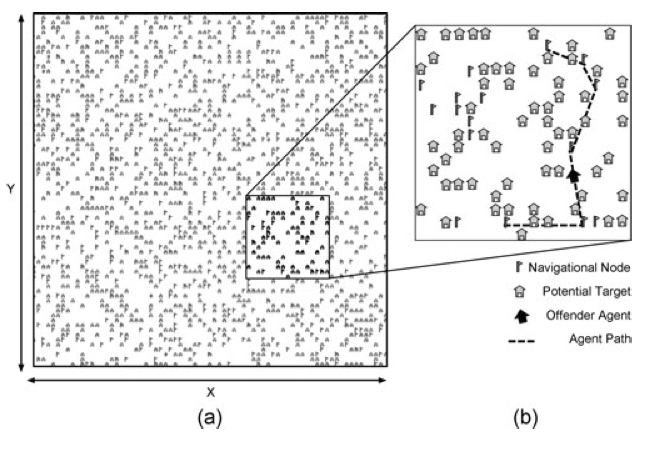
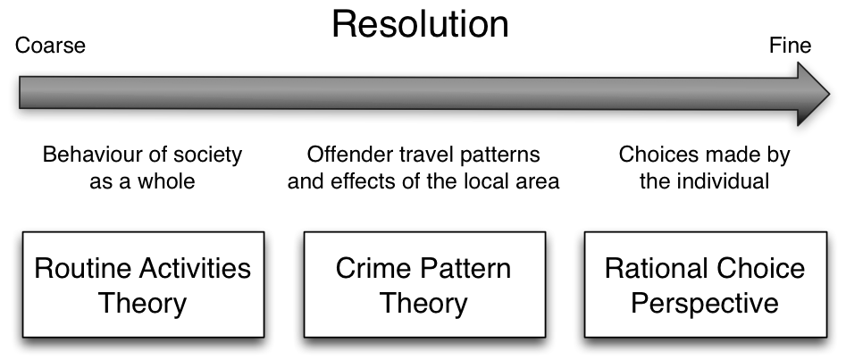
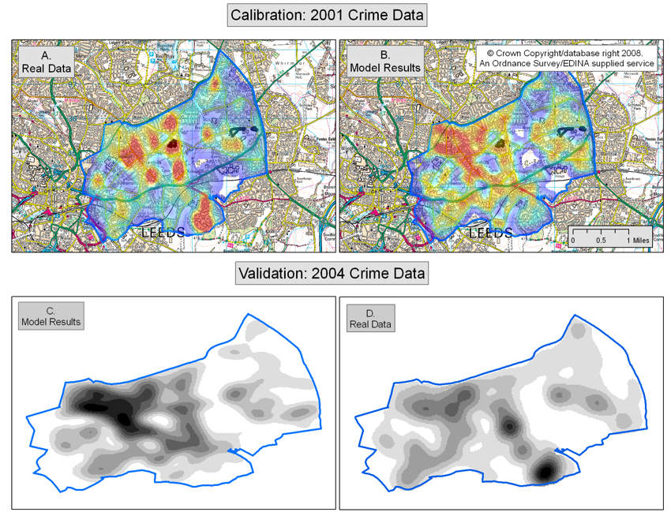

Crime Analytics and the Role of Dynamic Simulation Models
Nick Malleson
School of Geography & Leeds Institute for Data Analytics,
University of Leeds
nickmalleson.co.uk
These slides: http://surf.leeds.ac.uk/presentations.html
Overview
Dynamic Simulation - Agent Based Modelling
Explanatory Agent-Based Crime Models
Predictive Agent-Based Crime Models
Modelling Broader Urban Dynamics
Predictive Policing (?)
Ethical Implications
Why Model Crime?
Exploring theory (‘explanatory’ models)
Simulation as a virtual laboratory:
Linking theory with crime patterns to test it.
Making predictions (‘predictive’ models)
Forecasting social / environmental change.
Exploring aspects of current data patterns through prediction.
Why is it Difficult?
Extremely complex system:
Attributes of the environment (e.g. individual houses, pubs, etc.).
Personal characteristics of the potential offender and/or victim.
Features of the local community.
Physical layout of the neighbourhood.
Potential offender’s knowledge of the environment.
Traditional approaches often work at large scales, struggle to predict local effects
"Computationally convenient".
But cannot capture non-linear, complex systems.

Introduction to ABM
Aggregate v.s. Individual
'Traditional' modelling methods work at an aggregate level, from the top-down
E.g. Regression, spatial interaction modelling, location-allocation, etc.
Aggregate models work very well in some situations
Homogeneous individuals
Interactions not important
Very large systems (e.g. pressure-volume gas relationship)
Introduction to ABM
Aggregate v.s. Individual
But they miss some important things:
Low-level dynamics, i.e. “smoothing out” (Batty, 2005)
Interactions and emergence (more on these later)
Unsuitable for modelling complex systems

Introduction to ABM
Systems are driven by individuals
(cars, people, ants, trees, whatever)
Bottom-up modelling
An alternative approach to modelling
Rather than controlling from the top, try to represent the individuals
Account for system behaviour directly
Autonomous, interacting agents
Represent individuals or groups
Situated in a virtual environment
Crating an ABM
Create an urban (or other) environment in a computer model.
Stock it with buildings, roads, houses, etc.
Create individuals to represent offenders, victims, guardians.
Give them backgrounds and drivers.
See what happens.
Better Representations of Theory
Environmental Criminology theories emphasise importance of
Individual behaviour (offenders, victims guardians)
Individual geographical awareness
Environmental backcloth

Agent-Based Modelling - Appeal

Modelling complexity, non-linearity, emergence
Natural description of a system
Bridge between verbal theories and mathematical models
Produces a history of the evolution of the system
Agent-Based Modelling

Both!
Difficulties:
Stochasticity
Computationally expensive (not amenable to optimisation)
Complicated agent decisions
Lots of decisions!
Multiple model runs (robustness)
Modelling "soft" human factors
Need detailed, high-resolution, individual-level data
Who else is doing this?
A few eaxmples of other relevant ABMs from Place-Based Simulation Modeling: Agent-Based Modeling and Virtual Environments
ABM Explanatory Example (Birks 2012)
Explanatory: exploring theory
Randomly generated abstract environments
Theoretical 'switches'
Rational choice perspective
Routine activity theory
Geometric theory of crime
Validation against stylized facts:
Spatial crime concentration
Repeat victimisation
Journey to crime curve
XXXX MORE ON THIS
ABM Predictive Example
Predictive: exploring the real world
ABM to explore the impacts of real-world policies
Urban regeneration in Leeds


ABM Predictive Example

ABM Burglary Results
Did it work?
Did it work?
Behavioural Trends in Burglars
Analysis of Modus Operandi.
Interviews with prisoners.
Risk for areas of different MOs and target characteristics.
XXXX A slide or two on SURF & DUST
Ethical Implications
This is not minority report!
We can't (and wouldn't want to!) predict when/where/who will commit a crime.
Academics have a role to set the boundaries on what is ethically acceptable
Dynamic simulation models have great potential, we need to make the case that they can be used responsibly
Particularly relevant in the 'big data' / 'smart cities' era
Predictive Intelligent Policing
This is not predictive policing
It could be, in the future, maybe, but not yet
This is a useful tool for exploring the crime system.
It might lead to a better understanding of:
How different behavioural characteristics (offender, victim, or guardian) influence crime outcomes
How the physical infrastructure can be organised to discourage crime
How patrol routes might be most effective in circumstances
Etc.
References
XXXX Do references
Malleson, N. and A. Evans (2013) Agent-Based Models to Predict Crime at Places. In G. Bruinsma and D. Weisburd (Eds) Encyclopedia of Criminology and Criminal Justice pp 41-48 . Springer.